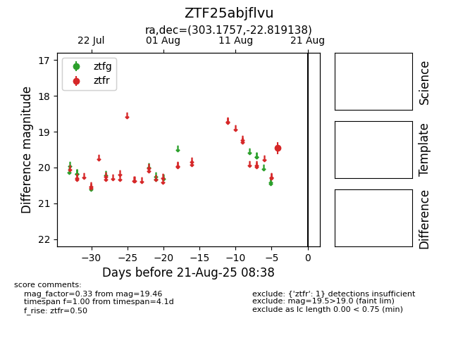

Target ZTF25abjflvu at 2025-08-21 08:38, see:
FINK: fink-portal.org/ZTF25abjflvu
Lasair: lasair-ztf.lsst.ac.uk/objects/ZTF25abjflvu
ALeRCE: alerce.online/object/ZTF25abjflvu
alt names
ZTF25abjflvu (ztf,alerce)
coordinates:
equatorial (ra, dec) = (303.1757,-22.81914)
galactic (l, b) = (19.9527,-27.49440)
photometry
last ztfr=19.46
1 ztfr detections
